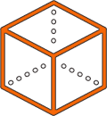

Technology
Object detection
We use YOLO and Full Resolution Residual Networks (FRRN) segmentation to correctly recognize the type of tracked objects.
ROS
Robot Operating System is the fundamental framework of our solutions.
Cameras, Radars and LiDARs
We use standard sensors to detect roads and objects near vehicles. We
are also able to employ other available sensors, like GPS, IMU, odometry, car CAN
bus information, and more.
Lane detection
We use deep neural networks and probabilistic algorithms for lane detection.
AI - Neural networks
We are using deep neural networks widely to improve self-driving capabilities of
Roboauto. Every single drive and simulation improves our models and makes the car
more robust against any situation it may encounter on the road.

Probabilistic robotics
Probabilistic robotics plays a vital role in our algorithms. We use
Bayesian filters (for example, particle filters, Kalman filter), probabilistic approach
(Markov chains, MCMC, Gibbs, Metropolis-Hastings) and its improvements for simultaneous
localization and mapping (SLAM). Or for object-based modeling of the surrounding environment and other problems in this field.